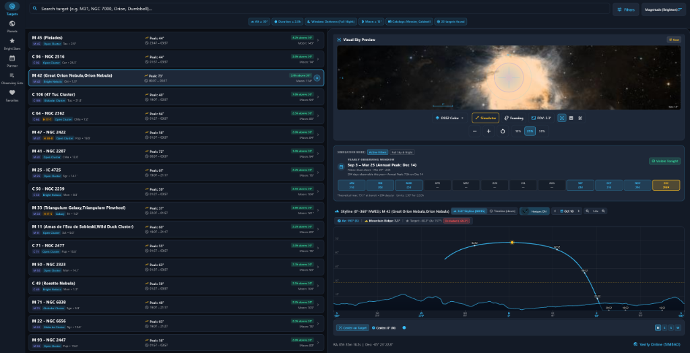
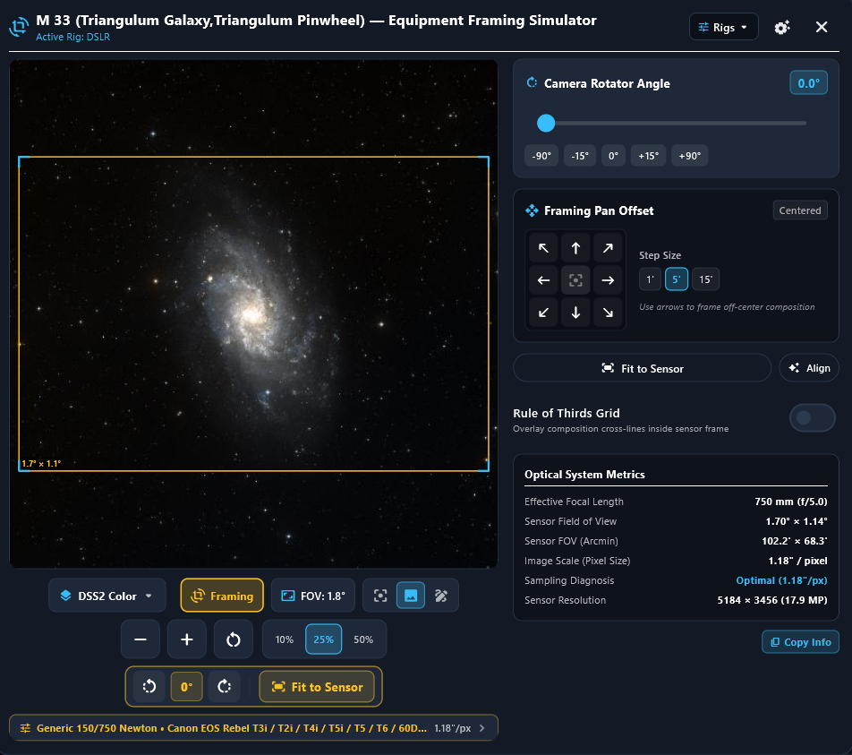

Menelway Astro Planner
An open source, lightweight, 100% offline session planning and astro equipment preview app for deep-sky astrophotography.
Windows (x64)
Portable ZIP • No install required
- Just unzip and run
menelway_astro_planner.exe - Self-contained 13,000+ deep-sky database
- Windows 10 / 11 compatible
Android
Direct APK • Mobile & Tablets
- Direct sideload APK package
- Works 100% offline in remote dark-sky sites
- Integrated telescope red night-vision theme


100% Offline
Operates without internet. Zero cloud tracking or network dependency.
Equipment Framing
Sensor dimension and focal length overlays with target scale projection.
Future Planner
Easily check which targets will be available in any upcoming time period.
Frequently Asked Questions
Menelway is an independent open source project dedicated to creating free, lightweight, and practical astronomy tools for observers and astrophotographers.
While other apps exist in this space (even Stellarium can be used with this goal), most are freemium, and none is truly free with the simplicity and features needed in a single, self-contained application:
- Work 100% Offline: Operates completely offline without requiring an active internet connection.
- Easy Equipment Preview: HiPS streaming when online, and a fast vector-based fallback when offline.
- Simple Future Targets Planner: Easily check which targets will be available for you in any upcoming time period.
- Lightweight & Bloat-Free: Fast Windows and Android builds with zero bloat, paywalls, limitations, or ads.
Origin of the name: "Menelway" is a combination of "Menel" (the Elvish word created by J.R.R. Tolkien for Skies / Firmament) and "Arroway" (in honor of Dr. Eleanor Arroway from Carl Sagan's Contact).
"All features that I personally needed are implemented, but feedback is always welcome. I hope it helps fellow astrophotographers. Clear skies!"
No. Menelway is 100% offline and self-contained.
The complete catalog database of over 13,000 deep-sky objects (Messier, Caldwell, NGC, IC, Arp, Herschel 400), planetary ephemerides, lunar phase algorithms, and Meeus coordinate transformations are packaged directly inside the application bundle. You can use it in remote dark-sky locations without any cellular or Wi-Fi signal.
Catalog celestial coordinates (Right Ascension and Declination) are stored in the international standard J2000 epoch.
The C++ calculation core computes topocentric horizontal coordinates (Altitude and Azimuth) in real time using Jean Meeus astronomical algorithms and analytical VSOP87/ELP2000 series, based on the observer's geographic latitude, longitude, and elevation.